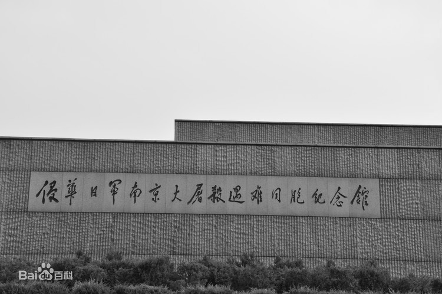
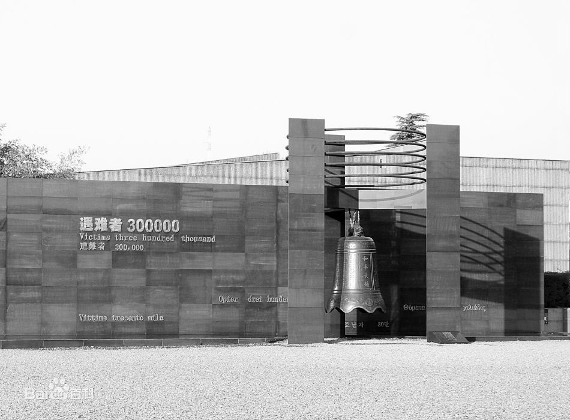
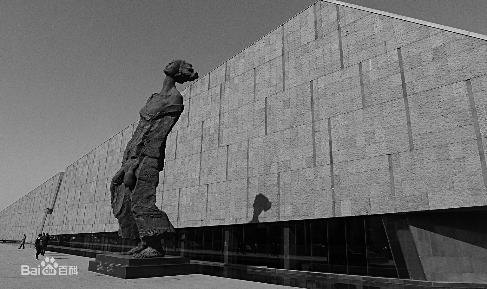
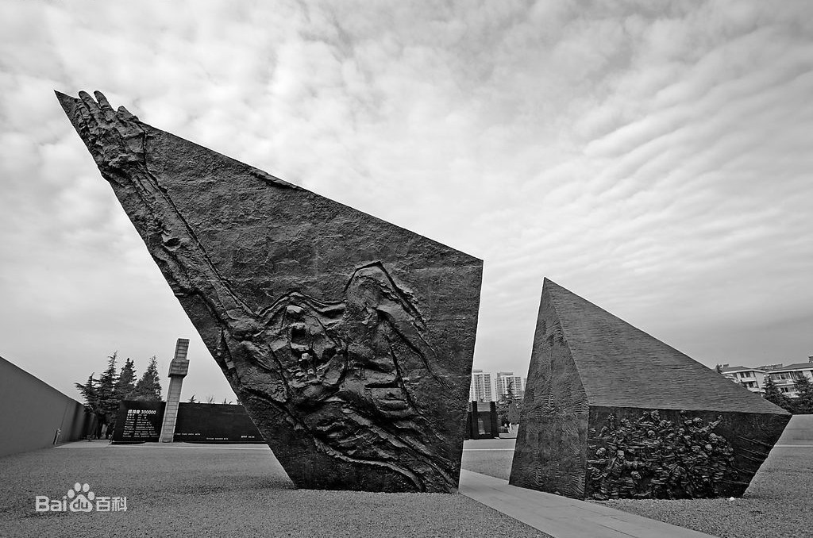
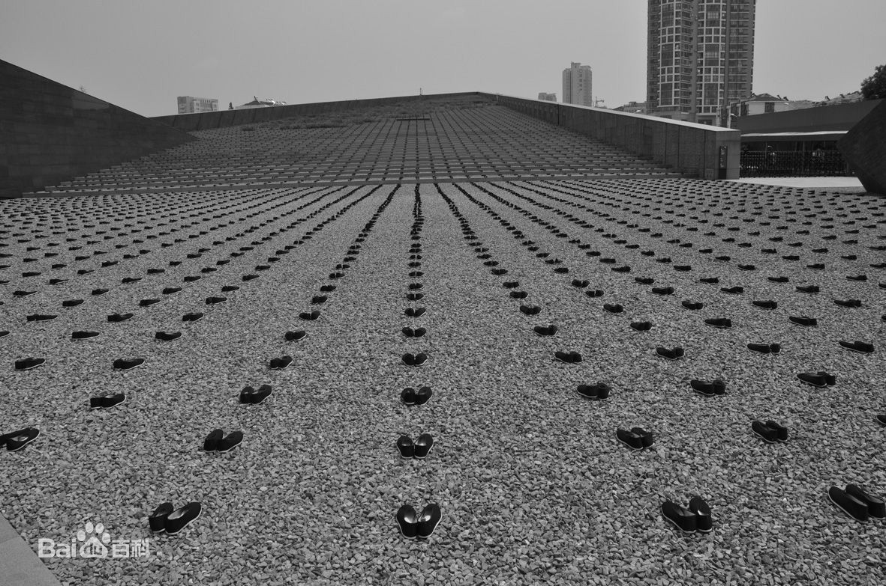

- 
- 
- 
- 
- 
侵华日军南京大屠杀遇难同胞纪念馆
简介
成人票：6元/人；学生票：3元/人；儿童票：2元/人
侵华日军南京大屠杀遇难同胞纪念馆位于南京市建邺区水西门大街418号，
通称江东门纪念馆，选址于南京大屠杀江东门集体屠杀遗址及遇难者丛葬地，
是中国首批国家一级博物馆，首批全国爱国主义教育示范基地，全国重点文物
保护单位，首批国家级抗战纪念设施、遗址名录，也是国际公认的二战期间三
大惨案纪念馆之一。
江东门纪念馆是为铭记侵华日军攻占中国首都南京后制造了惨无人道的南京大屠杀的暴行而筹建
，是中国人民承段全民族灾难的实证性、遗址型专史纪念馆，也是中国唯一一座有关侵华日军南京
大屠杀的专史陈列馆及国家公祭日主办地。
截至2015年，纪念馆占地面积120000多平方米，建筑面积115000平方米，展陈面积近18000平方米
，馆藏文物史料20万余件。2014年接待人数达803.4万余人次，自1985年8月15日建成开放至2015年
8月15日参观总人数6072.79万人次，来自美、日、德、英等90多个国家和地区的海外人士近300余万
人次，在全世界博物场馆中仅次于故宫博物院。
2015年12月1日，侵华日军南京大屠杀遇难同胞纪念馆的分馆——南京利济巷慰安所旧址陈列馆正式开
馆，对公众开放。这是亚洲最大、保存最完整的慰安所旧址，也是唯一一处被在世慰安妇指认过的慰
安所建筑。 2016年9月，侵华日军南京大屠杀遇难同胞纪念馆入选“首批中国20世纪建筑遗产”名录。


景点介绍
侵华日军南京大屠杀遇难同胞纪念馆，坐落在当年日军大屠杀地之一江东门“万人坑”遗
址及尸骨丛葬地之上，刻着“1937.12.13-1938.1” 一行黑色大字，标明了日军南京大屠
的时间。为悼念遇难同胞，南京人民于1985年修建了纪念馆，1995年又进行扩建。 建筑
物采用灰白色大理石垒砌而成，气势恢宏，庄严肃穆。是一处以史料、文物、建筑、雕塑
、影视等综合手法，全面展示南京大屠杀特大惨案的专史陈列馆。
该馆共分为外景展区、
遗骨陈列、史料陈列三个部分。外景展区由群雕、立雕、浮雕、标志碑、纪念碑、诗碑、
赎罪碑、枯树、断垣残壁、遇难者名单墙、绿树草坪等诸多景观，构成了生与死和悲与愤
为主题的纪念性墓地建筑风格。外形为棺椁状的遗骨陈列室内，陈列着建馆时从“万人坑”
中挖掘出的部分遇难者遗骨，是侵华日军大屠杀的铁证。呈墓穴形状且半地下的史料陈列
大厅内，陈列着1000余件珍贵的历史照片、文物、图表和见证资料。采用灯箱、沙盘、泥
塑、油画、复原景观、多媒体触摸屏、电影电视等现代陈列手段，再现南京大屠杀的悲惨
历史，揭露日本军国主义者的血腥暴行。
该馆成为国际间祈祷和平与历史文化交流的重要场
所，同时也是“全国爱国主义教育示范基地”。


建筑布局
纪念馆分展览集会区、遗址悼念区、和平公园区和馆藏交流区等4个功能性区域。
（一）展览集会区：该区分为史料陈列厅和集会广场。史料陈列陈列展示基本陈列和专题陈列。集会广场上有主题雕塑—冤魂呐喊、标志碑、灾难之墙、和平大钟，每年的12月13日，人们都会在这里集会，公祭遇难同胞，撞响和平大钟，发表和平宣言。
（二）遗址悼念区：该区包括“古城的灾难”大型组合雕塑、“历史证人的脚印”铜版路、《狂雪》诗碑墙、石壁墙与邓小平手写馆名、墓地广场、浮雕《劫难》《屠杀》《祭奠》、“母亲的呼唤”立雕、“万人坑”遗址陈列和悼念广场祭场、冥思厅等。
（三）和平公园区：该区以和平为主题，是世界各国人民进行和平交流的重要场所。包含胜利之墙、和平公园、汉白玉雕塑《和平》、紫金草花园、日本友人植树林等。
（四）馆藏交流区：该区是寓馆藏、交流、办公为一体的综合功能区域，其主要设施有学术报告厅、图书馆、特藏库等。